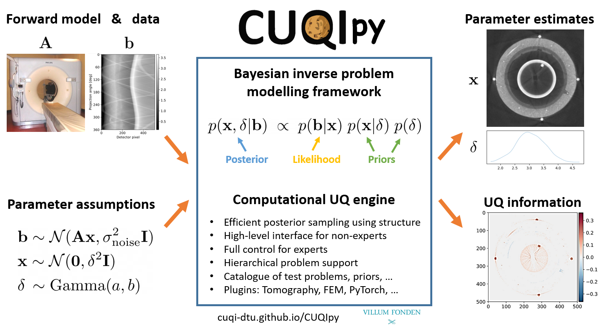
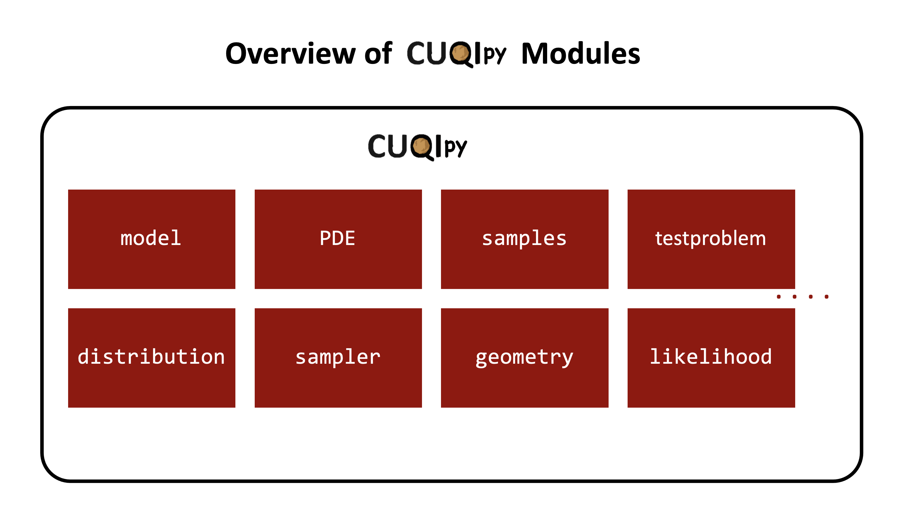
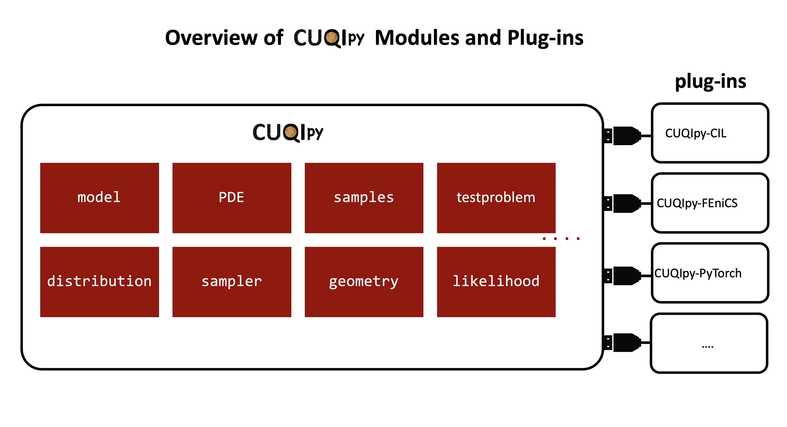

Overview of CUQIpy#
Table of Contents:#
Introduction #
note: some of the details mentioned here will make more sense after going through the next notebook titled “Probably the simplest BIP in the world”
What is CUQIpy? #
CUQIpy is a Python package.
CUQIpy stands for Computational Uncertainty Quantification for Inverse Problems in Python.
CUQIpy provides a framework for solving inverse problems using Bayesian inference.
The framework enables:
Modeling Bayesian inverse problems
Solving Bayesian inverse problems using classical and advanced numerical tools
Analyzing the solution of Bayesian inverse problems

Why CUQIpy? #
CUQIpy is built to address the need for:
A unified framework for solving Bayesian inverse problems across various scientific and engineering applications
A platform for modeling, solving and analyzing the solution of Bayesian inverse problems
A tool that can be used for both research and teaching
A tool that can be used by both beginners and advanced users
A tool that combines classical and advanced and scalable numerical methods for solving Bayesian inverse problems
A tool that is implemented purely in Python with minimal dependencies and can be easily maintained and integrated with other tools
CUQIpy modules #
CUQIpy consists of many modules for modeling, solving, and analyzing Bayesian inverse problems.
These modules mostly correspond to typical steps/components in a Bayesian inverse problem.
Each module contains classes and functions that are used to perform specific tasks.
click here for an overview of the modules available in CUQIpy.

CUQIpy plugins #
In addition to the CUQIpy modules, CUQIpy also has plugins that extend the functionality of the framework.
These plugins allow integration of third-party software and tools with CUQIpy.
click here to see the list of plugins available in CUQIpy.

CUQIpy design principles #
Provide simple and intuitive interface for users
Design for flexibility, extensibility, modularity, and maintainability
Accommodate both beginners and advanced users. e.g.,
Provide a set of test problems to use for experimentation and prototyping
Automatic sampler selection for a range of problems
Enable advanced customization of the problem setup and solution
Aligning the modeling code with the mathematical formulation of the problem, e.g.,
Bayesian model:
where \(d^{-1}\) and \(s\) are the precision parameters of the prior (the LMRF) and the data distribution (the Gaussian), respectively, \(x\) is the model parameter, and \(y\) is the data. \(\mathbf{A}\) is the forward operator.
Bayesian model in CUQIpy:
d = Gamma(1, 1e-4)
s = Gamma(1, 1e-4)
x = LMRF(1/d)
y = Gaussian(A@x, 1/s)
joint = JointDistribution(d, s, x, y)
See setting up a Bayesian model in CUQIpy in 4 steps here.
CUQIpy team #
Role of CUQIpy in this course #
The course “02975: Introduction to uncertainty quantification for inverse problems” covers various concepts in uncertainty quantification in inverse problems including:
Theory
Modeling
Numerical methods
Analysis
Coding
This course is not specificly for learning CUQIpy, however, CUQIpy is used as a tool for demonstration, prototyping, and exploring ideas
Although CUQIpy provides many methods for solving Bayesian inverse problems, the students will be asked in various assignments to implement some of the methods themselves to understand the underlying principles.
The CUQIpy component of the course is covered in about 14 hours of lectures, exercises and a guest lecture by Jakob Sauer Jørgensen.
Remarks #
This is first time we offer the CUQIpy component of the course.
We are excited about this component and hope you will find it useful.
I am here to facilitate your learning of this component.
Feel free to ask questions anytime.
Feel free to provide feedback anytime and help us improve.
There will be a lot of hands-on exercises and examples to help you understand the concepts.
You are encouraged to work in pairs or groups of 3 to discuss and solve the exercises.
Disclaimer: keep in mind that notation may vary among different course components.
Throughout we will introduce many tools in CUQIpy and discuss
how to use them
for what purpose
and identifying the right tool
Throughout all the course components, including CUQIpy, you will end up with more tools in your BIP toolbox!
How to run the code and solve the coding exercises in this mini-book? #
For now, it is not possible to run the code interactively in this online mini-book (plans to enable this in the future).
We suggest the following options:
Running on your local machine (preferred)
Running on learnmore (if you have access)
Option 1: Running on your local machine#
You can download each notebook from the top right download button and run it on your local machine.
Alternatively, you can clone the course repository and run the notebooks on your local machine. In a terminal, run the following command inside the directory where you want to clone the repository:
git clone https://github.com/CUQI-DTU/CUQI-Book.git
To run the notebook, you will need to install CUQIpy and other dependencies, including Jupyter notebook, numpy, matplotlib, etc.
The instructions for installing CUQIpy can be found here.
Option 2: Running on learnmore#
If you have access to learnmore, you can run the notebooks there.
Login to learnmore
Open the terminal (through the terminal icon at the bottom)
Create a directory for the course and navigate to it, for example:
mkdir uqcourse2024
cd uqcourse2024
Clone the course repository of the book inside the directory as explained above.
Use the file browser on the left to navigate to the course directory and open the notebooks.
To run the notebook, you need to select a kernel, two kernels are recommended for now (since they both have the latest version of CUQIpy):
cuqipy-fenics.cuqipy-CIL23.1.0.
Now you are ready to run the notebook, tip: use shift+(enter/return) to run a cell.
Additional links #
Some of the exercises answers will be available in this hackmd page: https://tinyurl.com/uqcourse2024.